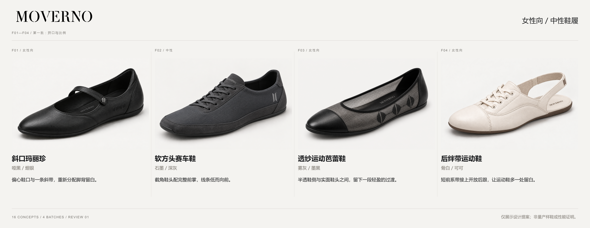

<!doctype html><html lang="zh-CN"><meta charset="utf-8"><meta name="viewport" content="width=device-width,initial-scale=1"><title>MOVERNO — F01–F04 审款</title><style>*{box-sizing:border-box}body{margin:0;background:#f4f3f0;color:#1a1b1d;font-family:Arial,"Microsoft YaHei",sans-serif}main{max-width:1600px;margin:auto;padding:28px}h1{font-size:28px;font-weight:500;margin:14px 0}p{color:#666;line-height:1.7}a{color:inherit}header{padding-bottom:20px;border-bottom:1px solid #ccc}.overview{width:100%;height:auto;display:block;margin:28px 0}.grid{display:grid;grid-template-columns:repeat(2,minmax(0,1fr));gap:28px}article{min-width:0}article img{display:block;width:100%;height:auto}h2{font-size:20px;font-weight:500}footer{padding:35px 0;font-size:14px}nav{display:flex;flex-wrap:wrap;gap:20px;margin-top:20px}@media(max-width:700px){main{padding:16px}.grid{grid-template-columns:1fr;gap:16px}h1{font-size:24px}}</style><main><header><h1>MOVERNO / 女性向与中性鞋履</h1><p>第一批 F01—F04 · 4 / 16 款 · 先审版型，再决定后续批次。点击单款图可查看原尺寸。</p><nav><a href="#F01">F01 斜口玛丽珍</a><a href="#F02">F02 软方头赛车鞋</a><a href="#F03">F03 透纱运动芭蕾鞋</a><a href="#F04">F04 后绊带运动鞋</a><a href="REFERENCE-MAP.md">参考映射与排重</a><a href="QA.md">质量核对记录</a></nav></header><a href="batch01-overview.png"></a><section class="grid"><article id="F01"><h2>F01 / 斜口玛丽珍</h2><a href="boards/F01-board.png"></a></article><article id="F02"><h2>F02 / 软方头赛车鞋</h2><a href="boards/F02-board.png"></a></article><article id="F03"><h2>F03 / 透纱运动芭蕾鞋</h2><a href="boards/F03-board.png"></a></article><article id="F04"><h2>F04 / 后绊带运动鞋</h2><a href="boards/F04-board.png"></a></article></section><footer>StyTrix：仅采用设计流程，无付费调用。图像：内置 ImageGen。材质、贴合和结构均为待打样提案；品牌标志与板面文字使用原始资产及确定性排版。<br><a href="batch01-prompts.json">母图提示词</a> · <a href="prompts-derived.json">派生及修正提示词</a> · <a href="PROGRESS.md">批次状态</a></footer></main></html>